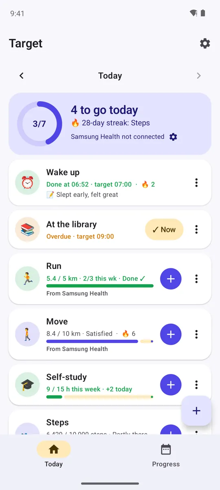
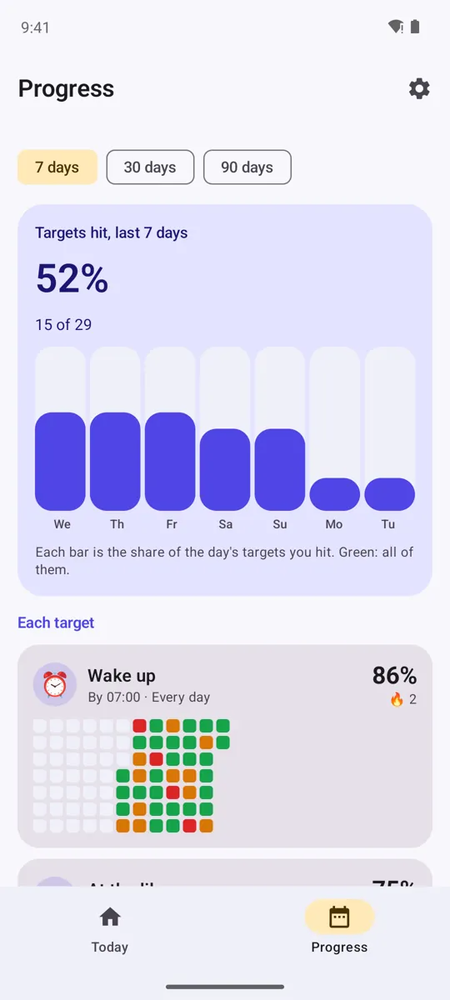
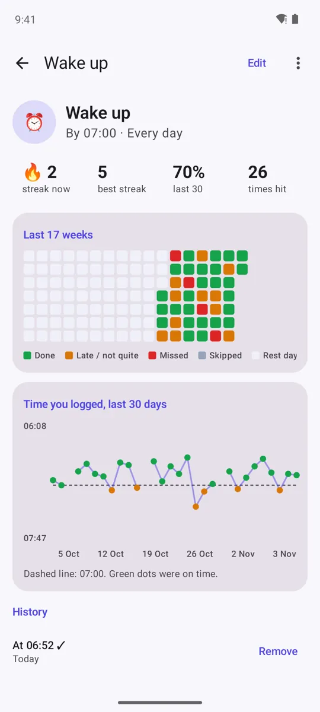
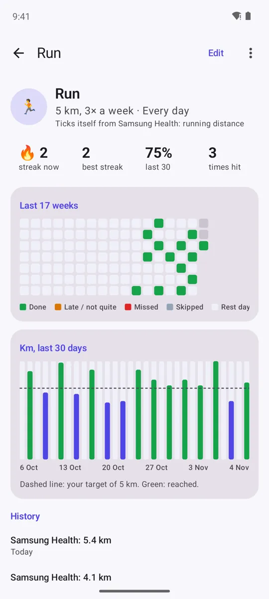
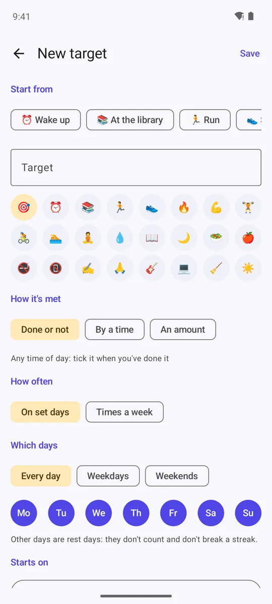
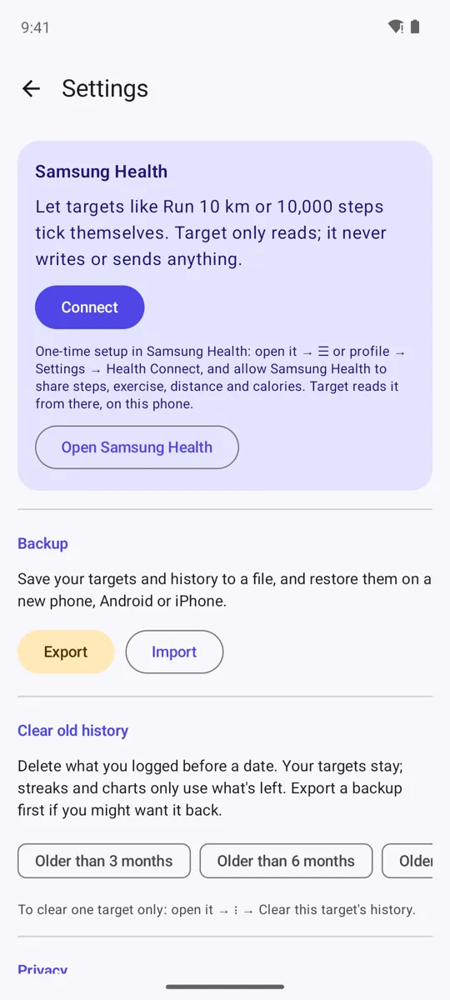
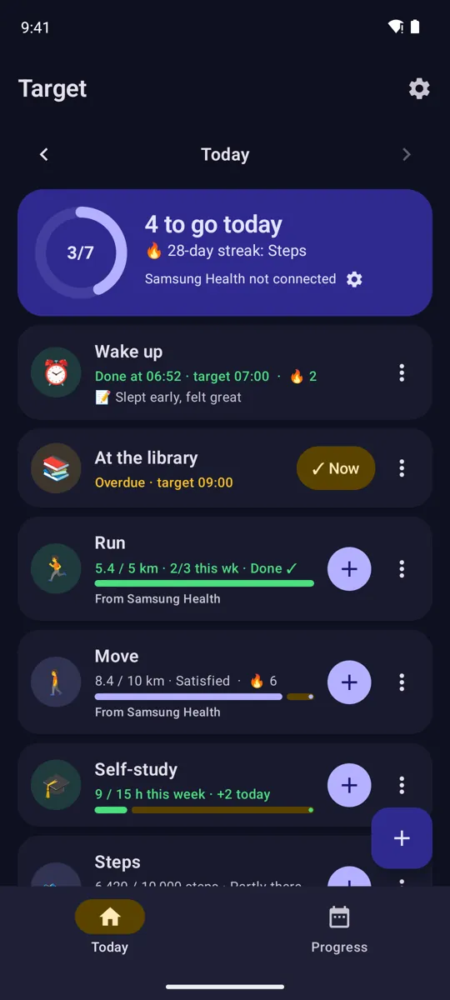

By a time
"Wake up by 7:00." Tap ✓ Now and it saves the time: on time is a hit, after is late.
Wake up by 7:00. At the library by 9:00. Run 5 km. 10,000 steps. Log each one with a tap, or let Samsung Health tick it for you, and watch your streaks and hit rate grow.
Works fully offline. No account, no ads, no tracking. Open source on GitHub.

Made for everyday use: a few taps, clear numbers, nothing to set up.
"Wake up by 7:00." Tap ✓ Now and it saves the time: on time is a hit, after is late.
Steps, running distance, active time and calories tick your targets by themselves, read on your phone through Health Connect.
Current and best streak for every target. Rest days and skipped days never break one.
How often you hit your targets over 7, 30 or 90 days, with a bar for every day.
A calendar for each target: done, late, missed, skipped or a rest day, at a glance.
Your wake-up times against 7:00, your km against the goal, your gym days each week.
Run 3 times a week on any days. Library by 10:00 on Tuesday, 13:00 on Thursday. Class moved? Change just today's time.
Pause a target for a holiday or exams without breaking the streak, and add a note to any day.
Today's targets on your Android home screen, with a one-tap ✓.
Walking, running and steps count together: 10 km or 13,500 steps. 60% is partly achieved, 80% satisfied, 100% done, 130% overachieved.
Log study hours, or set 15 hours a week in any amounts on any days.
Targets hit against last week, totals, best and toughest day, and a Share button. Clear old history whenever you like.
Real screenshots, taken automatically from the latest Android build. Scroll sideways for more.






Free. Get the latest version from GitHub. It isn't in an app store yet, so your phone asks you to confirm the first time. Updates install over the old version and keep your data.
Switching phones? Android and iPhone read the same backup file: Settings → Export on one, Import on the other.
No servers to trust, because there aren't any. Read the privacy policy.
The app has no internet permission at all.
Targets and history stay in the app's private storage.
Read-only, on the phone, only to tick your targets. Never written or shared.
Open it and start. Nothing to sign up for.
Built with Kotlin, Jetpack Compose, Room and Health Connect on Android; Swift, SwiftUI and Swift Charts on iPhone, with the same logic and the same tests on both. Every change is tested automatically on GitHub before a release.

I'm a Software Systems student at Kauno Kolegija in Kaunas, Lithuania, and a developer who builds and publishes his own apps. I grew up in Birsinghpur Pali, Madhya Pradesh, India, spent two years at a military school in Dehradun, and have been curious about how computers work since I was four.
I build apps I use myself: offline, private and free. Target is one of them; all of my published apps and their code are on my GitHub.
You might also have seen me in Kauno Kolegija's library campaign on the college's Instagram.
Coming next: Cohort Hub, my university academic project at Kauno Kolegija. It brings Moodle, the class calendar, the student portal and Gmail together in one web app, launching December 2026.
Also by Rachit: Duedial